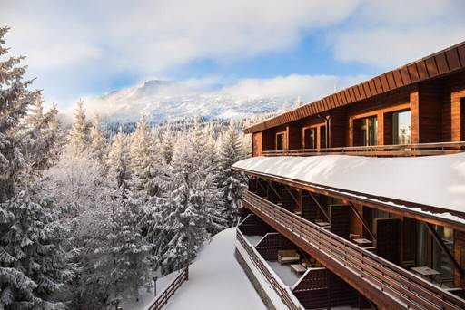
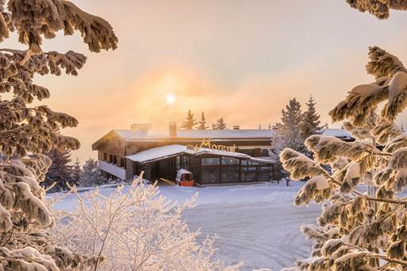
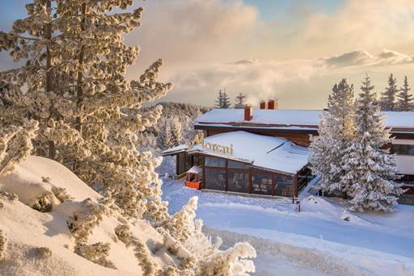

Хотел Морени се намира в София, на 9 км от Боянската църква. Предлага
помещения за настаняване с ресторант, безплатен частен паркинг, бар и СПА и уелнес център. Сред удобствата са денонощна рецепция и
помещение за съхранение на багаж, както и безплатен WiFi в цялата сграда. Има фамилни стаи.
|
 |
|  |
Във всички хотелски стаи е осигурен телевизор с плосък екран.
Гостите на хотел Морени могат да се насладят на закуска на шведска маса.
Гостите могат да се възползват от хидромасажна вана и сауна.
|
Американското посолство в София е на 10 км от Хотел Морени, а НДК е на
12 км. Най-близкото летище е летището на София - на 28 км.
Двойките харесват местоположението - те му дават оценка от 9.5 за пътуване за двама.
Ние говорим на вашия език!
|
 |